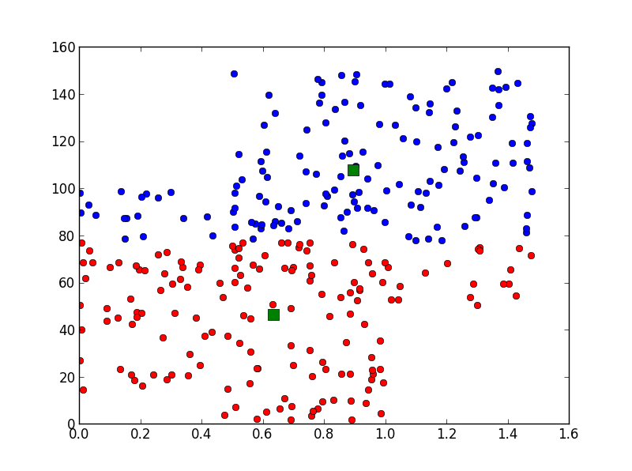

Kmeans using scipy
| get basic statistics of a list of tweets | info | remark | image |
| Description: | get basic statistics of a list of tweets |
| Status: | complete |
| Tags: | python, Kmean |
| Author: | Josh.Li |
| CreateDate: | |
| UpdateDate: |
| Code: | $python |
| from pylab import plot,show |
| from numpy import vstack,array |
| from numpy.random import rand |
| from scipy.cluster.vq import kmeans,vq |
| # data generation |
| data = vstack((rand(150,2) + array([.5, .5]), rand(150,2))) |
隨機生成兩堆2維資料*150筆
|
| data[:,1]=data[:,1]*100 |
| # computing K-Means with K = 2 (2 clusters) |
| centroids,_ = kmeans(data,2) |
Kmeans, K=2
|
| # assign each sample to a cluster |
| idx,_ = vq(data,centroids) |
| # some plotting using numpy's logical indexing |
| plot(data[idx==0,0],data[idx==0,1],'ob', |
畫圖, ob=圓藍
|
| data[idx==1,0],data[idx==1,1],'or') |
畫圖, or=圓紅
|
| plot(centroids[:,0],centroids[:,1],'sg',markersize=10) |
畫圖, sg=方綠
|
| show() |
| Output |
| Chart |
 |